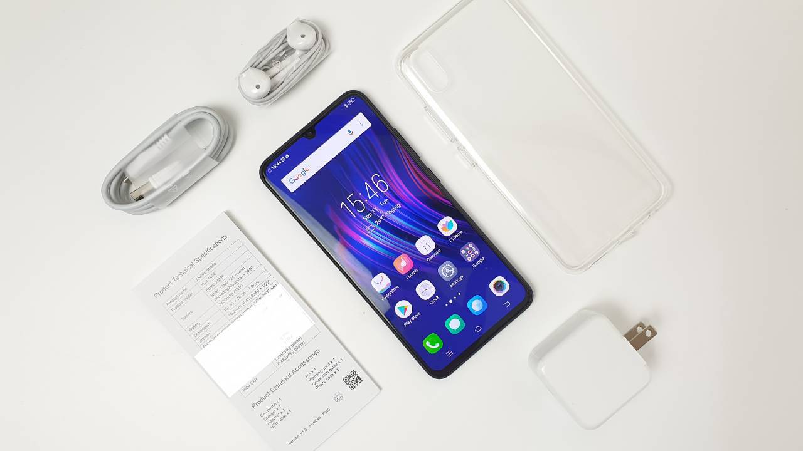
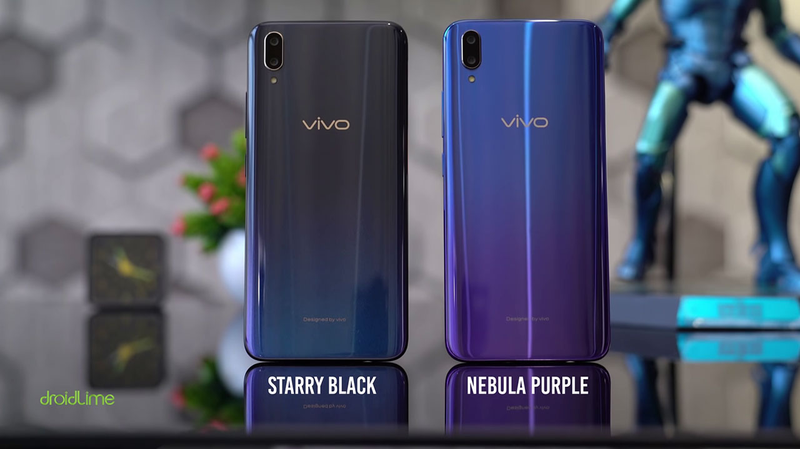
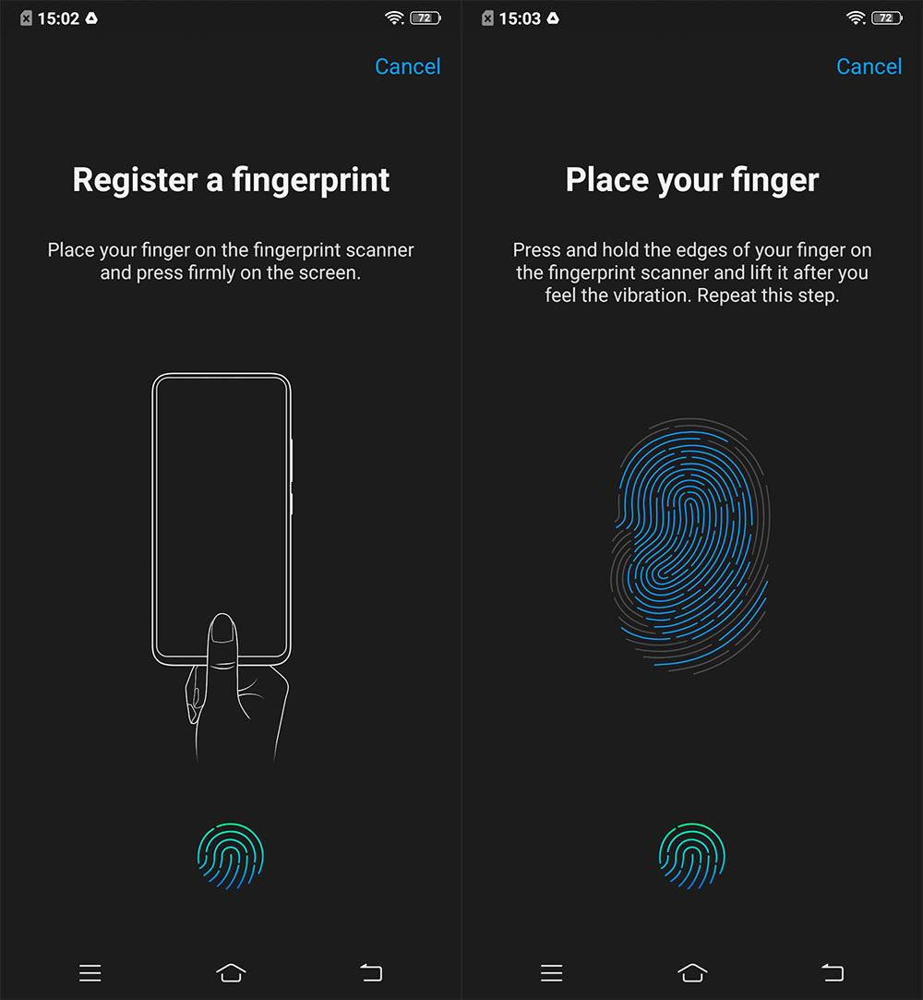
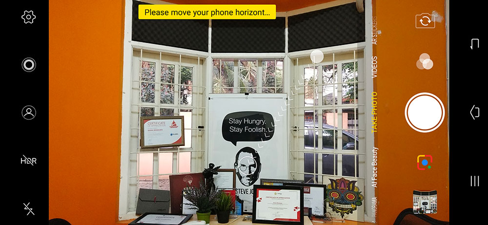
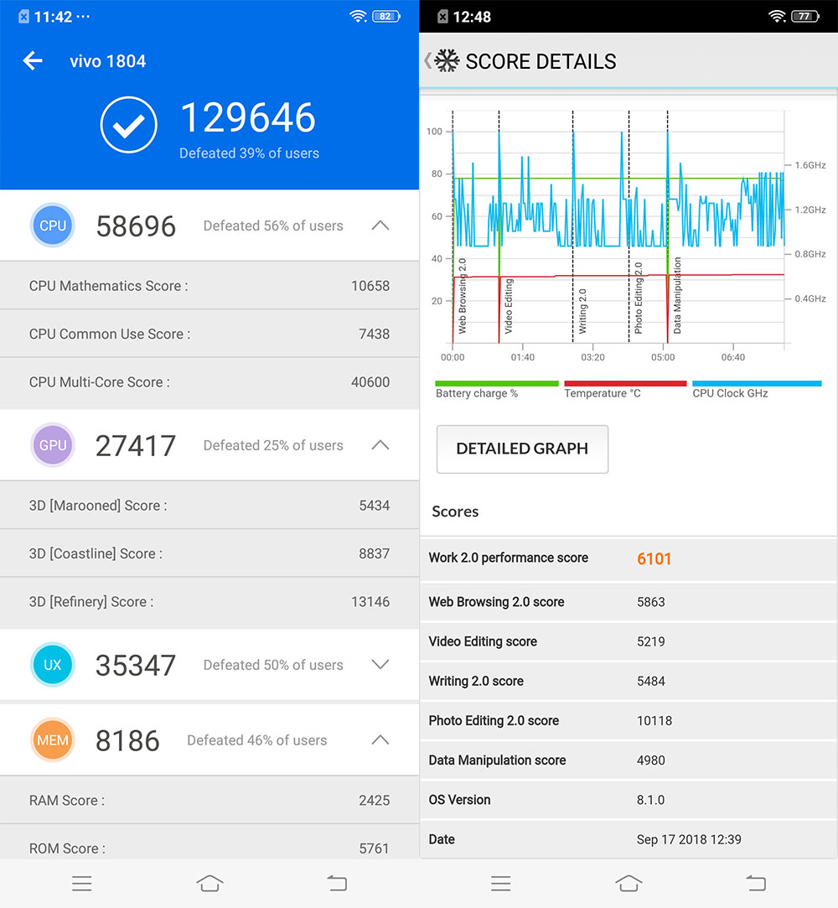

Vivo V11 Pro adalah smartphone kelas menengah dengan fitur Screen Touch ID yang inovatif
Vivo memang mesti belajar dari pengalaman dan tidak mengulangi kesalahan yang sama. Sebelumnya sesuai riset yang telah mereka lakukan, Vivo merilis V9 versi ‘downgrade‘ untuk market Indonesia – dengan chipset dan kamera lebih rendah. Meski telat, Vivo memang sempat mencoba memperbaiki keadaan dengan merilis V9 varian 6GB yang diotaki chipset Snapdragon 660. Kini Vivo telah merilis V11 Pro di Indonesia, kali ini berbeda karena mereka membawa smartphone kelas menengah yang menurut saya sangat bagus dan inovatif.
Penerus V9 ini dibekali fitur Screen Touch ID atau fingerprint sensor di bawah permukaan layar, SoC Snapdragon 660 AIE dengan RAM 6GB, dan kemampuan kamera lebih baik. Serta, yang paling penting ialah harganya berimbang yakni hanya Rp4.999.000. Sebagai daya tarik utama, Screen Touch ID ini memang cukup membuat banyak orang penasaran
Paket Penjualan Unit Vivo V11 Pro yang berkunjung ke meja redaksi DailySocial lifestyle berwarna nebula purple. Apa saja yang disertakan Vivo dalam kotak kemasan V11 Pro? Mari kita bongkar isinya. * Unit Vivo V11 Pro nebula purple * Adapter fast charging (5V/2A) * Kabel data microUSB * Headset * Silicon case * SIM ejector * Buku panduan dan garansi
Desain dengan Warna Bergradasi Sepintas desain V11 Pro memang terlihat masih identik dengan V9, dengan sudut-sudut yang agak membulat dan agak melengkung di kedua sisi punggungnya. Namun, V11 Pro hadir dengan desain notch yang minimalis seperti Essential Phone dan diselimuti warna bergradasi yang terinspirasi dari alam semesta dan keindahan malam.
Saat ini, Vivo menyediakan dua warna yakni starry black dengan gradasi warna hitam ke biru gelap bertabur kilauan yang mengadaptasi pemandangan malam berbintang. Serta, nebula purple dengan gradasi biru ke ungu. Tidak hanya menyenangkan saat dipandang, build quality V11 Pro juga sangat baik – body-nya terasa premium dalam genggaman tangan. Punggungnya berlapis material kaca dan bingkai plastik, dengan ketebalan 7,9mm dan bobot 156 gram.
Bagian muka terdapat layar 6,41 inci dengan bezel samping yang sangat tipis yakni 1,76mm, serta sekitar 3mm untuk bagian dagu dan dahi. Notch hanya menampung kamera depan 25-megapiksel, earpiece ada di atasnya dalam bentuk memanjang, lalu disampingnya ada sensor infrared. Sensor proximity dan ambient lightditempatkan di bawah layar.
Berpindah ke belakang, kita akan menjumpai kamera ganda 12-megapixel + 5-megapixel dalam setup vertikal dan LED flash. Tak ketinggalan, ada logo Vivo di tengah dan keterangan ‘designed by Vivo‘ kecil di bawah.
Tombol power dan volume bertempat di sebelah kanan, mudah dijangkau ibu jari. Lalu, SIM tray di sebelah kiri – ada dua slot nano SIM dan satu slot untuk microSD. Lanjut ke sisi atas, ada microphone sekunder. Sementara, di sisi bawah terdapat jack audio 3,5mm, microphone utama, port USB Type-C, dan speaker.
Ultra All Screen + Super AMOLEDVivo V11 Pro mengangkat desain Ultra All Screen dengan layar berukuran 6,41 inci, resolusi Full HD+ (1080×2340 piksel) dalam aspek rasio 19.5:9. Layarnya berjenis Super AMOLED yang menyuguhkan tampilan colorful dan warna hitam yang pekat. Layarnya juga sudah mendukung standar warna DCI-P3 yang menyuguhkan rentang warna yang lebih lebar. Namun Vivo tidak menyediakan mode layar, di pengaturan kita hanya bisa menyesuaikan tampilan lebih dingin atau lebih hangat
Layar 6,41 inci dengan resolusi Full HD+ memberikan tingkat kerapatan 402 ppi, jelas bukan yang terbaik. Tetapi sudah cukup memanjakan mata kita dan ketajamannya membuat tampilan yang disajikan terlihat hidup.
Screen Touch ID dan Face AccessPanel Super AMOLED merupakan komponen wajib untuk mendukung teknologi Screen Touch ID yang dikembangkan Vivo bersama Synaptics. Teknologi ini merupakan pengembangan in-display fingerprint generasi ke-4. Harus diakui, sensor pemindai sidik jari di bawah layar ini terbilang fitur yang sangat inovatif. Sudah sejak tahun 2017 lalu, teknologi diharapkan datang ke smartphone flagship – tapi sampai saat ini hanya Vivo mengadopsinya. Hebatnya lagi, Vivo membawanya ke smartphone kelas menengah untuk Indonesia.
Adapun untuk cara kerjanya, Super AMOLED akan menyinari layar untuk memindai dan mendapatkan sidik jari pengguna. Ruas garis pada sidik jari akan memproyeksikan bayangan ke sensor fingerprint, bayangan tersebut yang menjadi identifikasi. Untuk performa ketika membuka kunci layar smartphone tidak bisa bisa dibilang ngebut, karena kita harus sedikit menekan jari ke layar agak lama. Tingkat akurasinya sudah cukup akurat, meskipun terkadang saya harus memperbaiki posisi jari lebih dari sekali. Secara default, fitur off screen unlock aktif – di mana kita bisa membuka kunci layar meski smartphone dalam kondisi standby. Bila, logo fingerprint tidak muncul – cukup gerakkan sedikit smartphone. Fitur Screen Touch ID memang sangat keren, tetapi saya juga terkejut dengan fitur Face Access-nya. Kinerjanya cepat sekali dalam membuka kunci layar, baru menatap sebentar langsung terbuka – tidak ada kesempatan untuk tersenyum ke smartphone.
Dual AI CameraKemampuan kamera V11 Pro meningkat cukup signifikan dibanding pendahulunya, dari segi teknis maupun peningkatan dan penambahan fitur-fitur berbasis kecerdasan buatannya. Kamera utamanya hadir dengan sensor 1/2.8 inci, resolusi 12-megapixel, aperturebesar f/1.8, dan dilengkapi teknologi autofocus dual pixel PDAF. Sedangkan, kamera sekundernya 5-megapixel sebagai depth sensor dengan aperture f/2.4. Sementara, kamera depannya 25-megapixel dengan aperture f/2.0. Vivo menyebutnya ‘AI dual rear camera‘ dan sudah dilengkapi Google Lens. Fitur baru yang diunggulkan V11 Pro ialah Anti-Backlight AI HDR. Misalnya kita memotret seseorang dengan pada situasi backlight, sistem kamera tidak hanya akan membuat muka objek kita terlihat jelas tapi sekaligus memperbaiki warna latar belakangnya. Yang baru lagi ialah AI Portrait Framing, di mana sistem kamera akan merekomendasikan komposisi foto. Akan muncul ikon bulat, lalu kita gerakkan smartphone agar ke ikon tersebut – setelah itu kamera akan menjepret otomatis dalam waktu 2 detik
Fitur Face Beauty juga semakin mengerikan saja, kalau dulu cuma memperhalus kulit dan memutihkan wajah – sekarang bisa mengubah bentukan wajah menjadi lebih tirus, mengecilkan pipi yang tembem, membuat dagu lebih lancip, mata lebih belo, mengatur jarak kedua mata, membuat hidung tampak lebih mancung atau tirus, dan mengecilkan atau memperbesar bibir – semua efek itu bisa didapatkan secara real-time. Fitur lainnya seperti AI Bokeh, AI Scene Recognition, AI Selfie Lighting, AI low light mode, AR Sticker, Live Photo, Panorama, video slow motion, dan time-lapse. Tak ketinggalan, ada professional mode untuk Anda yang menyukai kontrol penuh.
Di professional mode, kita bisa mengatur exposure, ISO dari 50 hingga 3.200, shutter speed dari 1/12.000 hingga 32 detik, white balance, manual focus, serta mode ultra HD. Sayangnya, Vivo masih belum memperbolehkan kita menyimpan gambar dalam format RAW. Kualitas hasil foto V11 Pro juga selaras dengan peningkatan yang diberikan, kamera mampu menangkap detail dengan baik, warna akurat, kontras tinggi, dan noise yang rendah. Kamera depan juga sama asyiknya, berikut sejumlah foto hasil jepretan V11 Pro.
Vivo Dengan Snapdragon 660 AIE? Vivo V11 Pro digerakkan oleh chipset Qualcomm Snapdragon 660 AIE, yang terdiri dari CPU octa-core Kryo 260 dalam konfigurasi 4×2.0GHz + 4×1.8GHz dan GPU Adreno 512. Kemudian didorong RAM 6GB, storage 64GB, dan baterai berkapasitas 3.400 mAh yang sudah didukung teknologi dual-engine fast charging. Di aplikasi benchmark Antutu, V11 Pro mencetak skor 129.646 poin, sementara di PCMark Work 2.0 meraih 6.101 poin, lalu di 3DMark Sling Shot mendapatkan 1.864 poin, serta di GeekBench 4 single-core 1.434 poin dan multi-core 5.478 poin. Kinerja Vivo V11 Pro untuk penggunaan standar harian ataupun kebutuhan berat untuk multitasking dan aktivitas gaming terbilang lancar. Untuk bermain PUBG Mobile, berada di level grafis HD dan high frame rate.
Sparks* Screen Touch ID yang inovatif * Kinerja Face Access sangat cepat dan dibekali sensor infrared * Layar Super AMOLED yang menyuguhkan warna solid
Slacks* Masih terjebak dengan port microUSB * Belum bisa menyimpan foto dalam format RAW * Tidak ada sistem peredam getar macam EIS maupun OIS